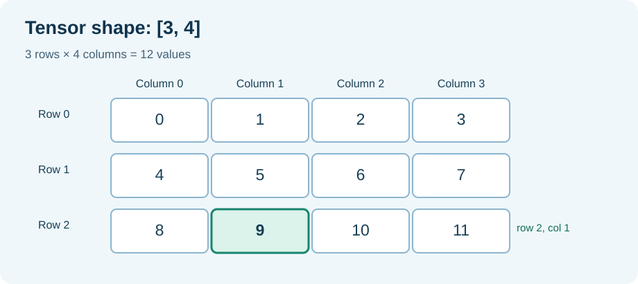

FOUNDATION MATHEMATICS · UNIT 16 OF 18
Tensor shapes, rows and attention heads
Read numerical tables and understand the shapes used by an AI training tape.
1. A familiar problem: rows of information in an Umicom application
Imagine an Umicom Bank dashboard that displays three customer accounts. For each account the screen needs four numerical indicators: available balance, a forecast, an alert score and recent transfer count. Without any complicated notation, these values form a table with three rows and four columns.
| Account row | Balance | Forecast | Alert score | Transfers |
|---|---|---|---|---|
| A | 100 | 120 | 0.1 | 2 |
| B | 80 | 75 | 0.2 | 1 |
| C | 40 | 60 | 0.5 | 4 |
A tensor is a structured collection of numerical values. For this exercise, think of it as a table; more advanced tensors can have additional dimensions. A shape states how many values lie along each dimension.
2. How many numerical values are stored?
If each value occupies four bytes in an FP32 array, twelve values need 12 × 4 = 48 bytes for the numerical data itself. This calculation does not include array metadata, gradients or a training tape. The number of bytes per value depends on its representation.

3. Read the index as a location, not a mysterious formula
For row 2 and column 1 in a four-column table, index = 2×4+1 = 9. This is the tenth stored number because indexes start at zero. The C23 expression is values[row * columns + column].
4. A neural-network attention tensor uses the same idea
The current rotary training exercise uses three token rows and four projected channels. The tensor has the same shape [3,4] even though its numbers represent features rather than bank balances. With two attention heads, the four channels are split into two groups of two.
| Token | Head 0 | Head 1 |
|---|---|---|
| 0 | channels 0–1 | channels 2–3 |
| 1 | channels 0–1 | channels 2–3 |
| 2 | channels 0–1 | channels 2–3 |
Divisibility is a practical requirement: four channels divide evenly into two heads. Five channels would not divide evenly into two equal-sized heads.
5. From formula to C23
/* A 3x4 FP32 tensor: 12 values, stored row by row. */
float tokenFeatures[3][4] = {
{0.25F, 0.55F, 0.35F, 0.15F},
{0.65F, 0.20F, 0.45F, 0.30F},
{0.40F, 0.75F, 0.15F, 0.60F}
};
/* The fourth value of row 1 is tokenFeatures[1][3]. */
The declared type fixes the shape of the teaching array. The Framework API uses a flat contiguous row-major buffer and explicit row/column counts, so the called function must validate them.
6. Practice with worked answers
- An Umicom Notes search has five results, each represented by eight features. What is the tensor shape and total number of elements?
- Where is row 3, column 2 stored in a row-major array with eight columns? Use zero-based indexes.
- Can six channels be shared equally between four attention heads?
Reveal the worked answers
1. Shape [5,8] and 5×8=40 elements. 2. Index=3×8+2=26 (the 27th value). 3. No: 6/4=1.5, not an integer; equal head widths would be impossible without changing the shape or head count.
Continue in the LLM course: Lesson 91 uses exactly this [3,4] shape in an engineering test. Return here whenever the test's array dimensions become difficult.